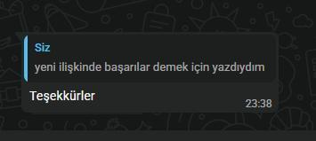
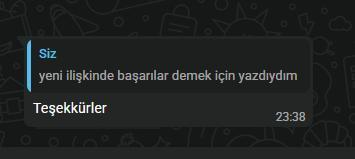

H ❤️ I
2. Yılımız Kutlu Olsun
Yeni sevgilinle başarılar sonsuza kadar.
Bir iskambil falında çıkmıştık birbirimize...
Bazen en güzel hikayeler, kupa kızı ve sinek valesi gibi beklenmedik anlarda biter. Yolun açık olsun.
Bazen en güzel hikayeler, kupa kızı ve sinek valesi gibi beklenmedik anlarda biter. Yolun açık olsun.